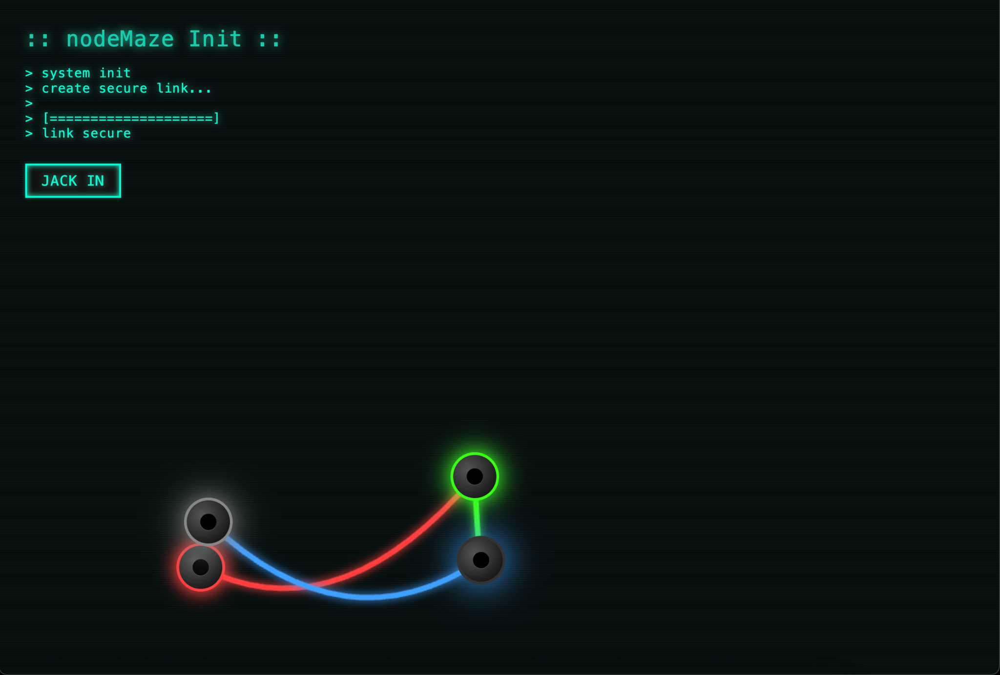
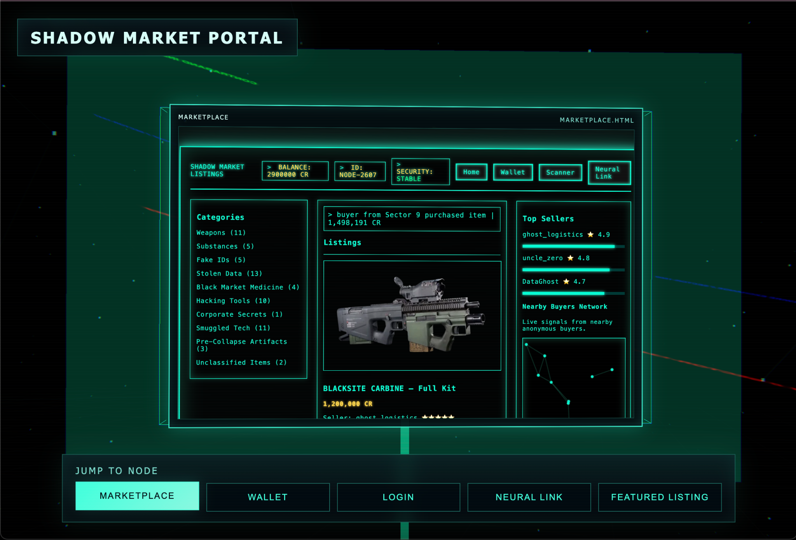
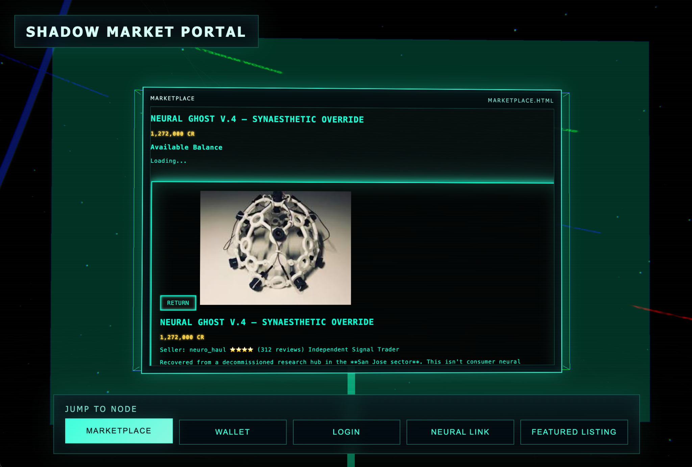
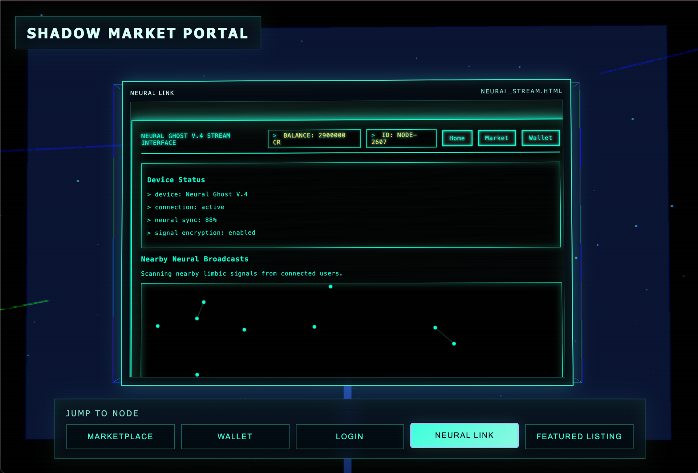

03 / Design fiction
Shadow Market
Shadow Market imagines an underground marketplace where people trade restricted technology, tools, and data through anonymous accounts. The familiar format of an online store invites visitors to consider how trust and reputation work when the people behind the listings are hidden.
Interactive website · HTML, CSS, and JavaScript
Dimensions: variable, browser-based
Collaborators: Yisi Ai, Jerrod Reyes, and Ryan Redden
San José State University · ART 101 · Spring 2026
Project screenshots
Interface documentation · Yisi Ai, Jerrod Reyes, and Ryan Redden · 2026



